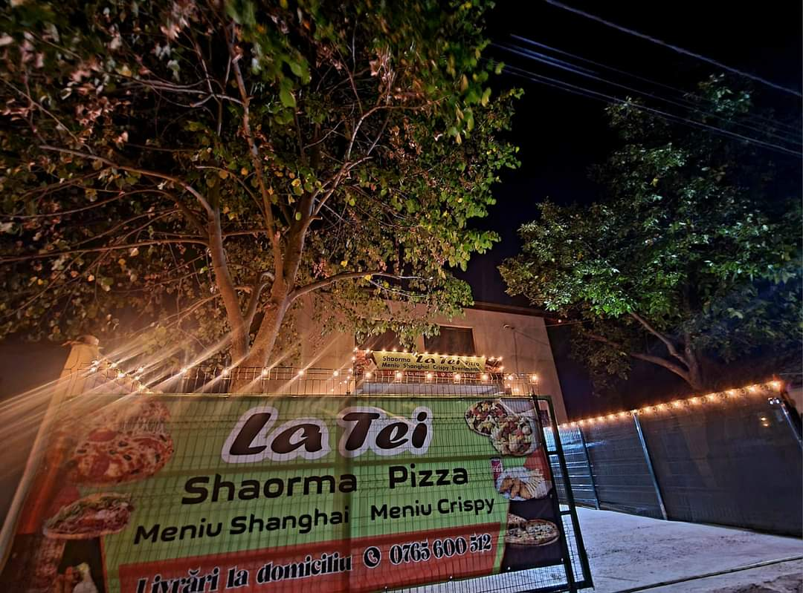
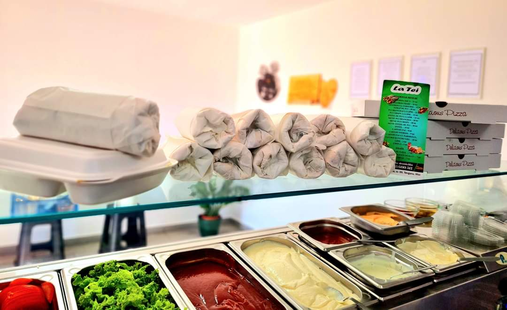
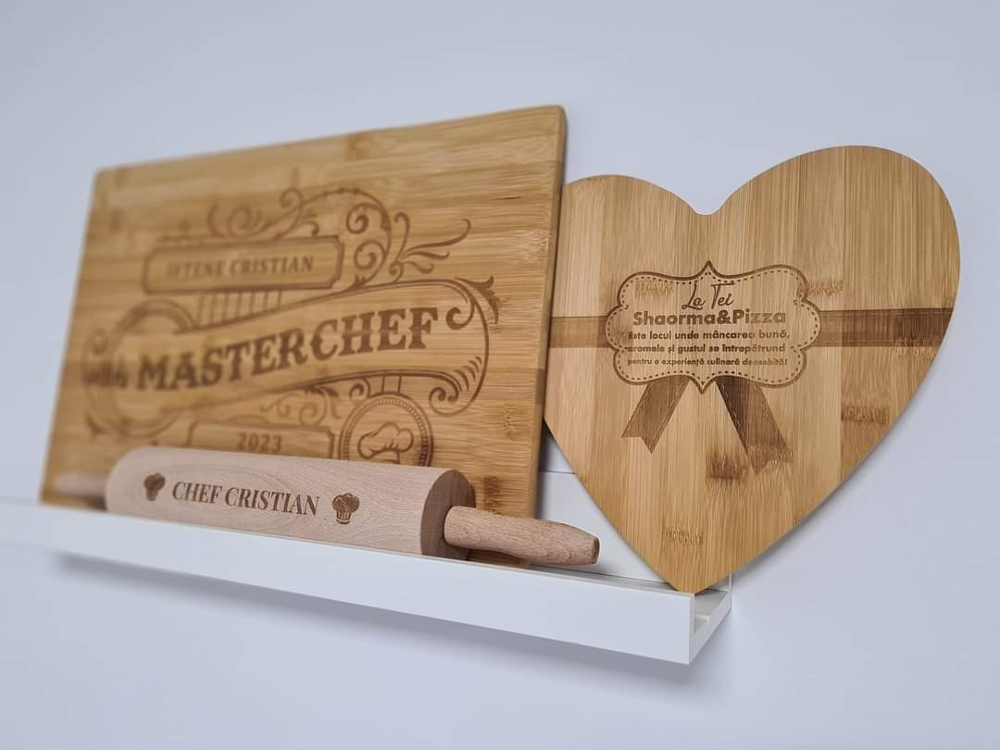

Cine suntem?
Shaormeira Tei este locul în care tradiția se îmbină cu inovația pentru a vă aduce cele mai delicioase preparate de shaorma din oraș. Am deschis ușile noastre în 2023, cu dorința de a redefini conceptul de fast food, oferind produse proaspete, ingrediente de calitate superioară și un gust autentic care să vă încânte simțurile.
Misiunea noastră
Misiunea noastră este simplă: să oferim cea mai bună shaorma, pregătită cu grijă și pasiune, utilizând doar cele mai bune ingrediente. Fiecare shaorma pe care o servim este unică, fiind creată după preferințele dumneavoastră, cu atenție la detalii și o pasiune autentică pentru bucătăria de calitate.

Ce ne face speciali?
Ingrediente Proaspete și de Calitate:
Folosim doar ingrediente proaspete și de calitate superioară, de la carne până la legume și condimente, pentru a vă oferi un gust autentic și de neuitat.